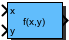
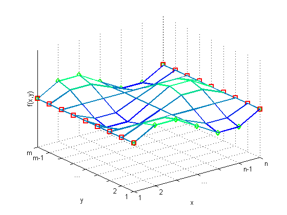
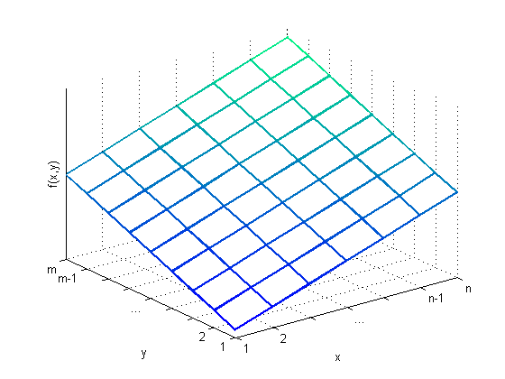

| Inports
| |
| x | Table index in x direction |
| y | Table index in y direction |
| Outports
| |
| Out | Table output |
| Mask Parameters | ||
| Name | ID | Description |
| TableData | 1 | Look-up table data |
| DimX | 2 | Number of data points in x-direction |
| x_min | 3 | Minimum input value of x-dimension for look-up table |
| x_max | 4 | Maximum input value of x-dimension for look-up table |
| DimY | 5 | Number of data points in y-direction |
| y_min | 6 | Minimum input value of y-dimension for look-up table |
| y_max | 7 | Maximum input value of y-dimension for look-up table |
Two dimensional look-up table with selectable number of data points.
Table data must be an array of size DimX*DimY.
If input is out of specified range, output will be cut off (no extrapolation).
The table of the LookupTable2D block must contain DimX times DimY data points and they have to be arranged as
| TableData = | [f(x1,y1), f(x2,y1), ... f(xn-1,y1), f(xn,y1), | ||
| f(x1,y2), f(x2,y2), ... f(xn-1,y2), f(xn,y2), | |||
| ... | |||
| f(x1,ym-1), f(x2,ym-1), ... f(xn-1,ym-1), f(xn,ym-1), | |||
| f(x1,ym), f(x2,ym), ... f(xn-1,ym), f(xn,ym)] |
with n as selected DimX and m as selected DimY values.
For periodic signals, the last entries per dimension must be identical to the first entries in this dimension, see the example in the following figure.

For non-periodic signals there is no restriction regarding the last data points, see the example in the figure below.

| FiP16 | 16 Bit Fixed Point Implementation |
| FiP32 | 32 Bit Fixed Point Implementation |
| Float32 | 32 Bit Floating Point Implementation |
| Float64 | 64 Bit Floating Point Implementation |
16 Bit Fixed Point Implementation
| Inports Data Type
| |
| x | int16 |
| y | int16 |
| Outports Data Type
| |
| Out | int16 |
32 Bit Fixed Point Implementation
| Inports Data Type
| |
| x | int32 |
| y | int32 |
| Outports Data Type
| |
| Out | int32 |
32 Bit Floating Point Implementation
| Inports Data Type
| |
| x | float32 |
| y | float32 |
| Outports Data Type
| |
| Out | float32 |
64 Bit Floating Point Implementation
| Inports Data Type
| |
| x | float64 |
| y | float64 |
| Outports Data Type
| |
| Out | float64 |